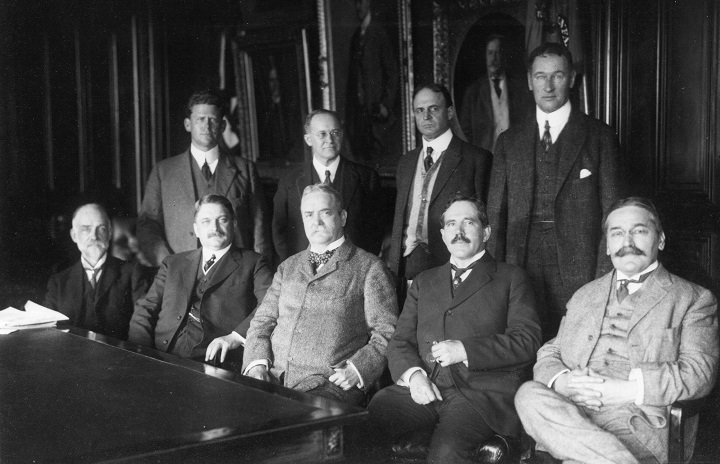

Research during the WWI
When the United States joined the First World War in 1917, Pupin was working at Columbia University, organizing a research group for submarine detection techniques.[15] Together with his colleagues, professors Wils and Morcroft, he performed numerous researches with the aim of discovering submarines at Key West and New London. He also conducted research in the field of establishing telecommunications between places. During the war Pupin was a member of the state council for research and state advisory board for aeronautics. For his work he received a laudative from president Warren G. Harding, which was published on page 386 of his autobiography.
Contributions to determining borders of Yugoslavia
In 1912, the Kingdom of Serbia named Pupin an honorary consul in the United States. Pupin performed his duties until 1920. During the First World War, Pupin met with Cecil Spring Rice, the British ambassador to the United States, in an attempt to aid Austro-Hungarian Slavs in Canadian custody. Canada had incarcerated some 8,600 so-called Austrians and Hungarians who were deemed to be a threat to national security and were sent to internment camps across the country. The majority, however, turned out to be Ukrainian, but among them were hundreds of Austro-Hungarian Slavs, including Serbs. The British ambassador agreed to allow Pupin to send delegates to visit Canadian internment camps and accept their recommendation of release. Pupin went on to make great contributions to the establishment of international and social relations between the Kingdom of Serbia, and later the Kingdom of Yugoslavia and the United States.
After World War I, Pupin was already a well-known and acclaimed scientist, as well as a politically influential figure in America. He influenced the final decisions of the Paris peace conference when the borders of the future kingdom (of Serbs, Croats and Slovenians) were drawn. Pupin stayed in Paris for two months during the peace talk (April–May 1919) on the insistence of the government.
My home town is Idvor, but this fact says little because Idvor can't be found on the map. That is a small village which is found near the main road in Banat, which belonged to Austro-Hungary, and now is an important part of Serbs, Croatians and Slovenians Kingdom. This province on the Paris Peace Conference in 1919, was requested by the Romanians, but their request was invalid. They could not negate the fact that the majority of the inhabitants were Serbs, especially in the Idvor area. President Wilson and Mr. Lancing knew me personally and when found out that I was originally from Banat, Romanian reasons lost its weight.
According to the London agreement from 1915. it was planned that Italy should get Dalmatia. After the secret London agreement France, England and Russia asked from Serbia some territorial concessions to Romania and Bulgaria. Romania should have gotten Banat and Bulgaria should have gotten a part of Macedonia all the way to Skoplje.
In a difficult situation during the negotiations on the borders of Yugoslavia, Pupin personally wrote a memorandum on 19 March 1919 to American president Woodrow Wilson, who, based on the data received from Pupin about the historical and ethnic characteristics of the border areas of Dalmatia, Slovenia, Istria, Banat, Međimurje, Baranja and Macedonia, stated that he did not recognize the London agreement signed between the allies and Italy.
Source: Wikipedia